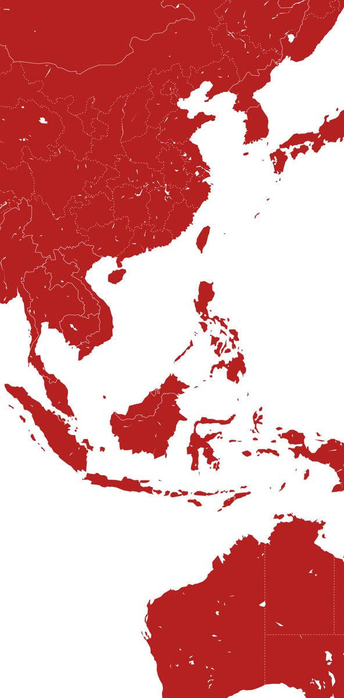

Kemerdekaan
17 Agustus 1945
Jejak Langkah Sejarah Indonesia
Sejarah Indonesia adalah permadani yang ditenun dengan benang-benang kerajaan kuno, era kolonial yang panjang, dan perjuangan heroik menuju kemerdekaan. Jauh sebelum menjadi republik, nusantara ini dikuasai oleh kerajaan-kerajaan besar maritim dan agraris seperti Sriwijaya di Sumatera dan Majapahit di Jawa, yang pengaruhnya meluas hingga ke Asia Tenggara.
Kedatangan bangsa Eropa pada abad ke-16, dimulai dari Portugis, Spanyol, lalu Belanda, mengubah lanskap politik dan ekonomi nusantara. Masa penjajahan Belanda (Hindia Belanda) berlangsung selama lebih dari tiga abad, meninggalkan jejak mendalam dalam struktur sosial dan arsitektur kita.
Puncak dari kesadaran nasional bermuara pada Proklamasi Kemerdekaan pada 17 Agustus 1945 oleh Ir. Soekarno dan Mohammad Hatta, menandai lahirnya negara kesatuan Republik Indonesia yang merdeka dan berdaulat.
Perkembangan Indonesia Kini
Dari negara agraris pasca-kemerdekaan menjadi salah satu kekuatan ekonomi terbesar di Asia Tenggara.
Ekonomi Berkembang
Indonesia kini tergabung dalam G20, menunjukkan posisinya sebagai salah satu ekonomi utama dunia. Fokus pada industrialisasi, ekonomi digital, dan hilirisasi sumber daya alam terus mendorong pertumbuhan.
Masifnya Infrastruktur
Pembangunan infrastruktur yang pesat, mulai dari jalan tol Trans-Jawa dan Trans-Sumatera, bandara baru, bendungan, hingga transportasi massal modern seperti MRT dan Kereta Cepat Jakarta-Bandung (Whoosh).
Transformasi Digital
Lahirnya berbagai *startup* unicorn karya anak bangsa menempatkan Indonesia di peta digital global. Penetrasi internet yang luas mendisrupsi cara masyarakat berbelanja, belajar, dan berbisnis.
Saksi Bisu Peradaban

Candi Borobudur
Candi Buddha terbesar di dunia, dibangun abad ke-9, diapit pegunungan indah. Keajaiban arsitektur kuno Indonesia.

Gedung Sate
Ikon kota Bandung dengan arsitektur Hindia Baru. Memiliki ornamen seperti tusuk sate di menara sentralnya yang menjadi ciri khas.

Candi Prambanan
Kompleks candi Hindu terbesar di Indonesia dari abad ke-9, didedikasikan untuk Trimurti. Memiliki relief epos Hindu yang memukau.

Jam Gadang
Ikon kota Bukittinggi yang dibangun tahun 1926. Uniknya, bangunan ini tidak menggunakan besi dan semen, melainkan kapur, putih telur, dan pasir.
Surga Tropis Dunia
Dari bentangan pantai berpasir putih hingga megahnya pegunungan vulkanik.

Pulau Dewata, Bali
Ikon pariwisata Indonesia yang terkenal di seluruh dunia. Menawarkan perpaduan sempurna antara pantai yang indah, budaya Hindu yang kaya, terasering sawah yang hijau, dan kehidupan malam yang semarak.

Raja Ampat
Papua Barat Daya
Surga tersembunyi bagi para penyelam dengan keanekaragaman hayati laut terkaya di dunia.

Gunung Bromo
Jawa Timur
Menawarkan panorama matahari terbit yang spektakuler dengan lanskap lautan pasir dan kawah aktif.

Danau Toba
Sumatera Utara
Danau vulkanik terbesar di dunia yang menyimpan keindahan alam dan budaya Batak yang kental.
"Bhinneka Tunggal Ika"
Berbeda-beda tetapi tetap satu jua. Sebuah harmoni dalam keberagaman budaya, agama, dan bahasa di bawah panji Sang Saka Merah Putih.